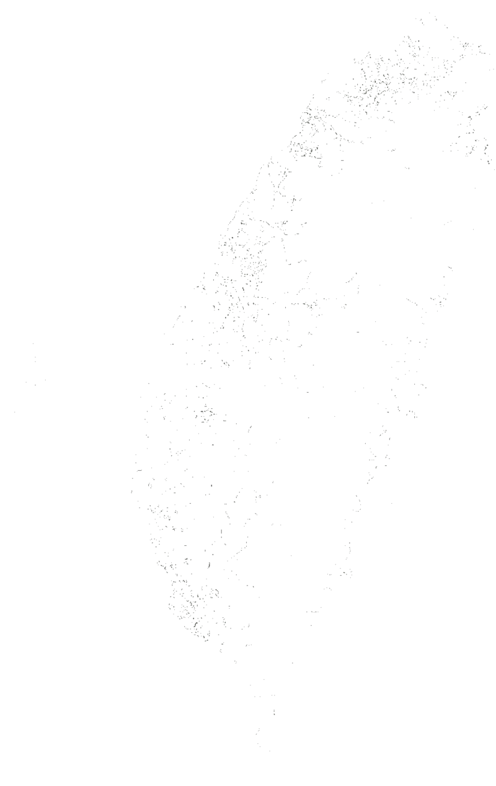
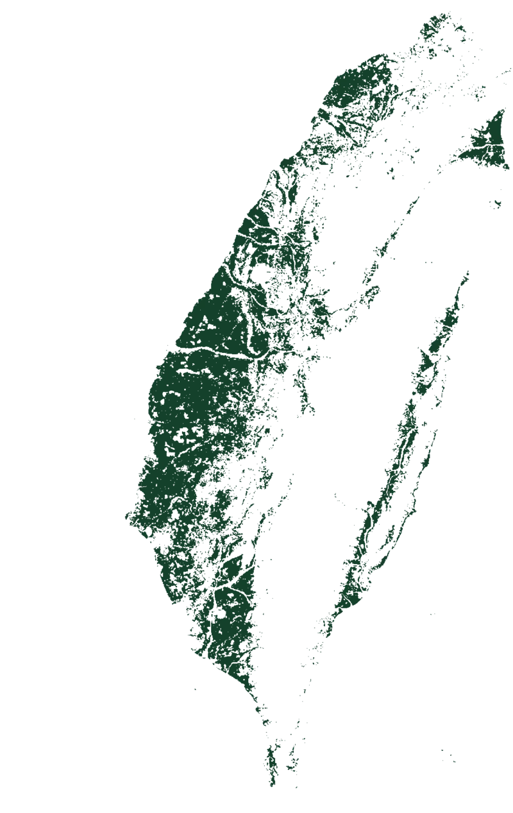

Two hectares, and the same coast
Where a machine like this would land.





Two layers, one island. Parcels under two hectares, and an index built from how far the temperature swings in a day, how far it swings across a season, and how much the rain varies. Take them one at a time and they describe the same coast.
- Farm parcels
- Under two hectares the cut FAO uses for a smallholding
- Over two hectares and there is very little of it
- Climate volatility index
- 0.38 to 0.49 steadiest
- 0.49 to 0.60
- 0.60 to 0.71
- 0.71 to 0.82
- 0.82 to 0.93 swings hardest
Point at a row and the map holds it on its own, with the small parcels left in.
Thirty percent of the small-farm land on that coast. That is all the number says. Turning a share into machines or into protein takes two measurements we have not made.
- How many machinesThe parcel layer above can be counted. Nobody has counted it, so the number of reactors behind any share on that dial stays blank.
- How much proteinNo titre measured, no bill of materials totalled. Neither the output of one machine nor its cost belongs on this page yet.
Every farmer a biomanufacturer.
Not a farmer who owns a machine. A farmer whose cooperative owns the irrigation line, and for whom no outside licence-holder decides what gets made.
Still openA build cost we can put a number on. A classification a Taiwanese regulator accepts. A cooperative willing to run the thing.